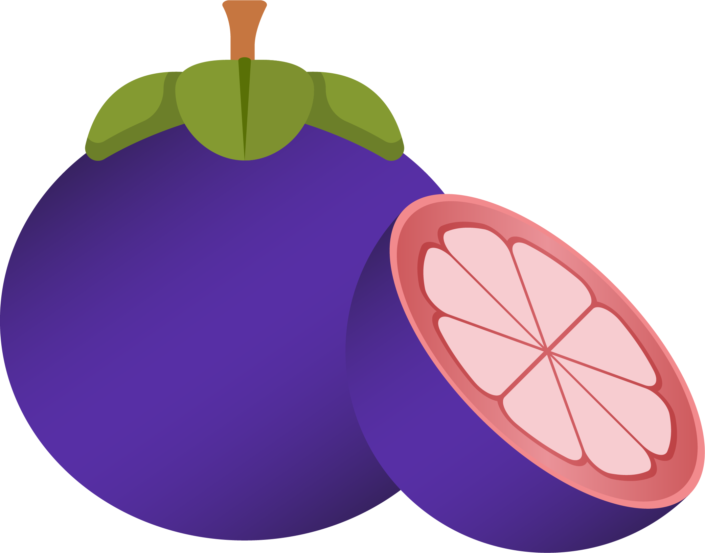

Mangosteen

Mangosteen (Garcinia mangostana) is a tropical fruit
that is often referred to as the "queen of fruits." It is native to
Southeast Asia but is now cultivated in various tropical regions
around the world. The mangosteen is a small, round fruit with a thick,
purple or reddish rind and soft, white, juicy flesh on the inside.
Here are some key characteristics of the mangosteen fruit:
Mangosteen is highly regarded for its delicious taste and is often enjoyed fresh as a dessert or snack. It's also used in various culinary applications, such as salads, preserves, juices, and ice creams.
In addition to its culinary uses, mangosteen has gained attention for its potential health benefits due to the presence of xanthones and other bioactive compounds. It is sometimes referred to as a "superfruit" because of its perceived antioxidant and anti-inflammatory properties, although more research is needed to fully understand and confirm these potential health benefits.
Mangosteen is known for its distinctive appearance and exquisite flavor, and it is considered a prized and exotic fruit in many parts of the world.
- Rind: The outer rind of the mangosteen is thick, leathery, and inedible. It is typically purple or reddish when ripe and contains natural compounds called xanthones, which are believed to have various health benefits.
- Flesh: Inside the rind, the mangosteen has segments of juicy, snow-white, and aromatic flesh. The flesh is sweet and slightly tart, with a unique and delightful flavor often described as a combination of peach, strawberry, and citrus notes.
- Segments: The number of flesh segments can vary, but a typical mangosteen contains between 4 to 8 segments, each containing a seed.
- Seeds: Each segment contains one or more seeds, which are usually inedible due to their bitter taste. It's the flesh that is prized for its flavor and is the main edible part of the fruit.
Mangosteen is highly regarded for its delicious taste and is often enjoyed fresh as a dessert or snack. It's also used in various culinary applications, such as salads, preserves, juices, and ice creams.
In addition to its culinary uses, mangosteen has gained attention for its potential health benefits due to the presence of xanthones and other bioactive compounds. It is sometimes referred to as a "superfruit" because of its perceived antioxidant and anti-inflammatory properties, although more research is needed to fully understand and confirm these potential health benefits.
Mangosteen is known for its distinctive appearance and exquisite flavor, and it is considered a prized and exotic fruit in many parts of the world.